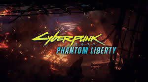

Cyberpunk 2077: Phantom Liberty es la primera expansión de Cyberpunk 2077, el exitoso juego de rol de acción desarrollado por CD Projekt Red. Lançada en septiembre de 2023, esta expansión añade nuevas historias, misiones y contenido al ya vasto mundo de Night City, el oscuro y futurista escenario del juego original.
¿De qué trata Cyberpunk 2077: Phantom Liberty?
Phantom Liberty lleva a los jugadores a una nueva y peligrosa zona de la ciudad llamada Dogtown, ubicada en el distrito más conflictivo de Night City, conocido por su anarquía y control por parte de bandas criminales y facciones corruptas. La expansión se centra en una trama de espionaje y conspiraciones, donde V (el protagonista) se ve envuelto en un conflicto relacionado con una operación secreta de alto nivel que podría poner en peligro la estabilidad del gobierno de la región.
V es reclutado para una misión de rescate por un misterioso personaje, Inta (interpretado por la famosa actriz idris Elba), quien tiene sus propios intereses ocultos. A medida que la historia avanza, V deberá tomar decisiones cruciales y enfrentarse a nuevos enemigos, así como aliados en una trama llena de giros inesperados. A lo largo de la expansión, los jugadores podrán explorar nuevas áreas de Night City, realizar misiones adicionales y mejorar aún más sus habilidades y equipo.
